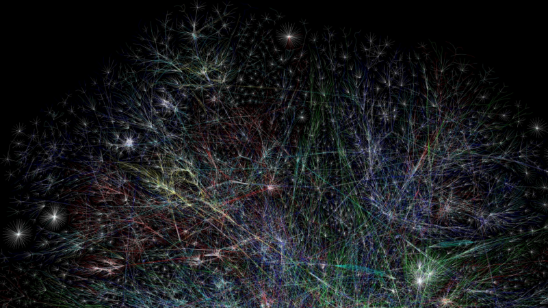

Caracteristicas de la world Wibe Web
-
Dimension
 -
Estadistica

La Web es una dimensión de intercambio informativo y de telecomunicaciones multimediática, interactiva y a distancia, en la que se reflejan en gran medida los conocimientos, actitudes y comportamientos del ser humano.
Estadísticamente, se estimaba en 2002 que de 2.024 millones de páginas web existentes, un 56,4% estaban en idioma inglés, frente a un 7,7% en alemán, 5,6% en francés y 4,95% en japonés, seguido de un 4% en español. Muchos acusan esta predominancia del idioma anglo de servir como un mecanismo de imposición de la lengua y la cultura (estadounidense) en el resto del mundo, operando así como un agente imperialista en el corazón de la globalización informática.